KyotoKozyKuisine is a web-based booking and exploration platform designed to streamline itinerary planning for tourists in Kyoto by seamlessly integrating hostel reservations with dining discovery, thereby eliminating the tedious manual process of cross-referencing maps to find restaurants near a booked accommodation.
To power the feature that recommends restaurants within a 5km radius of a user's chosen hostel, the project uses a hybrid database architecture. MySQL manages structured transactional data like users, bookings, and reviews to ensure data integrity. MongoDB handles dynamic user profiles and geospatial data, using $near and $geometry queries to fetch nearby dining options. Linking both databases with shared primary IDs creates a denormalized structure that boosts read efficiency, transforming manual travel planning into a seamless experience based on location.
Language: JavaScript, HTML, CSS
Frontend: EJS, JavaScript, CSS
Backend: Node.js, Express.js
Databases & Tools: MySQL, MongoDB, Mongoose, Postman API
System Design
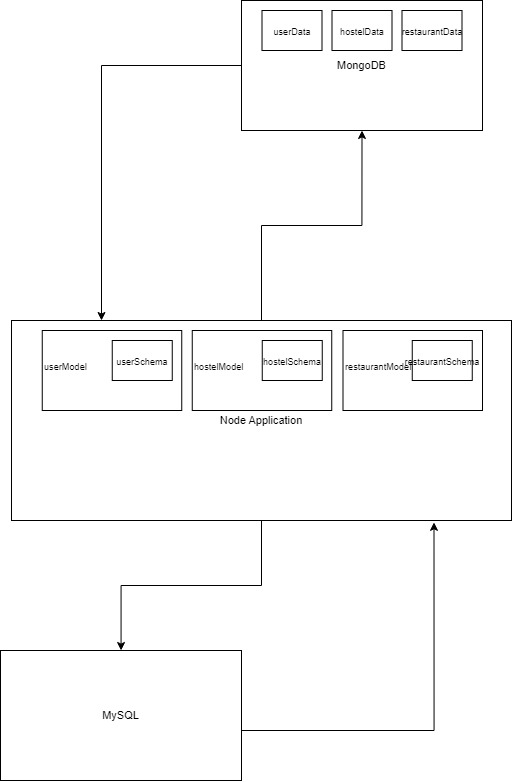
Database Design
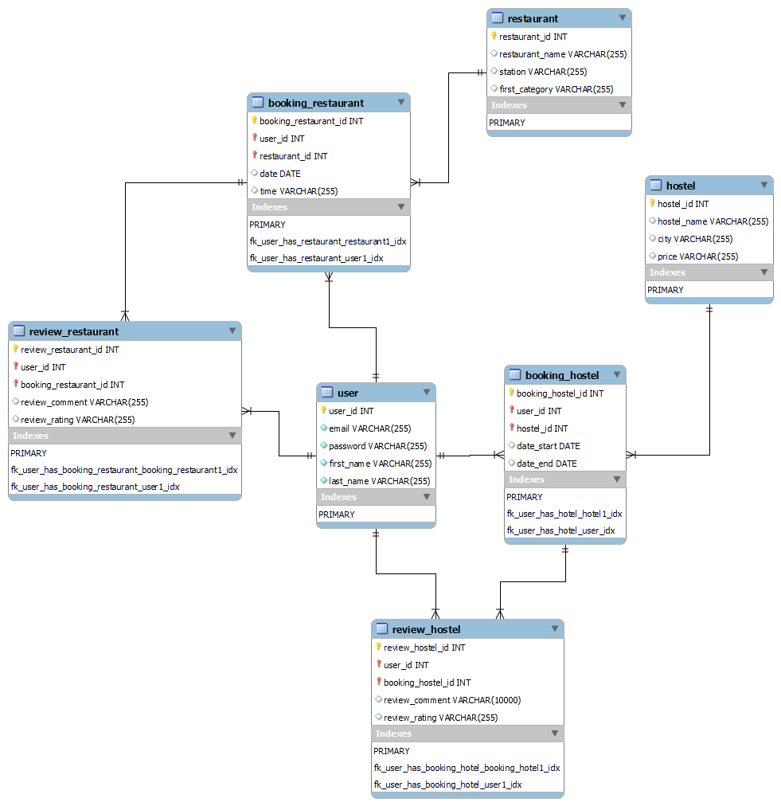
Home & About Page
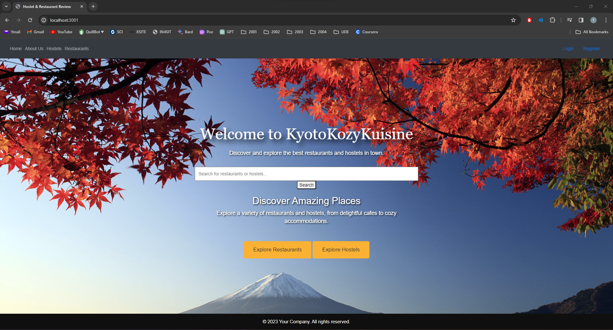
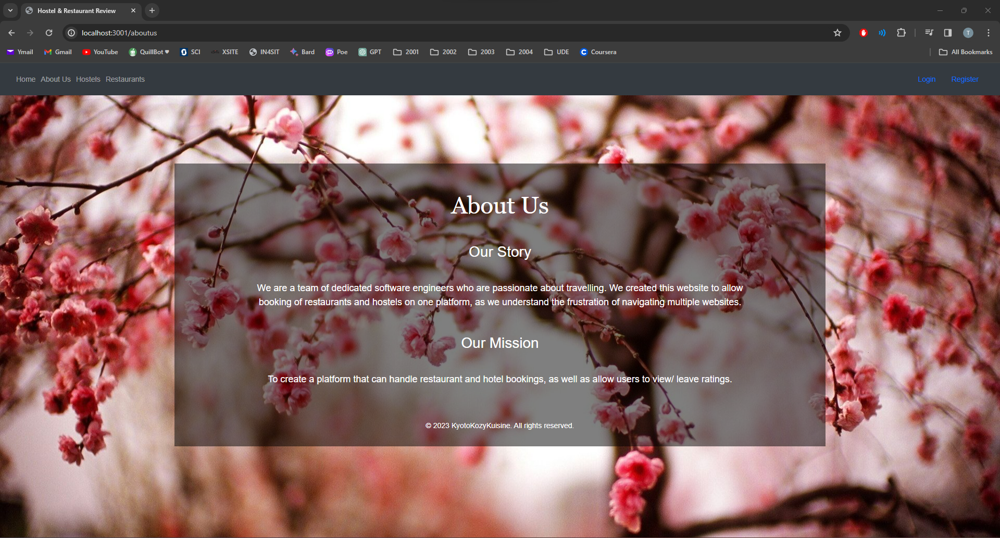
Login & Register Page
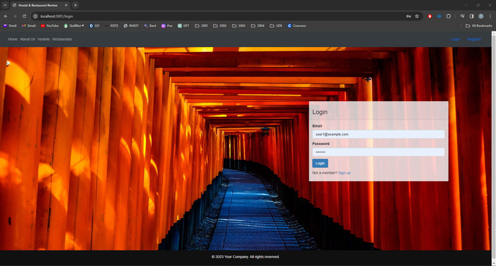
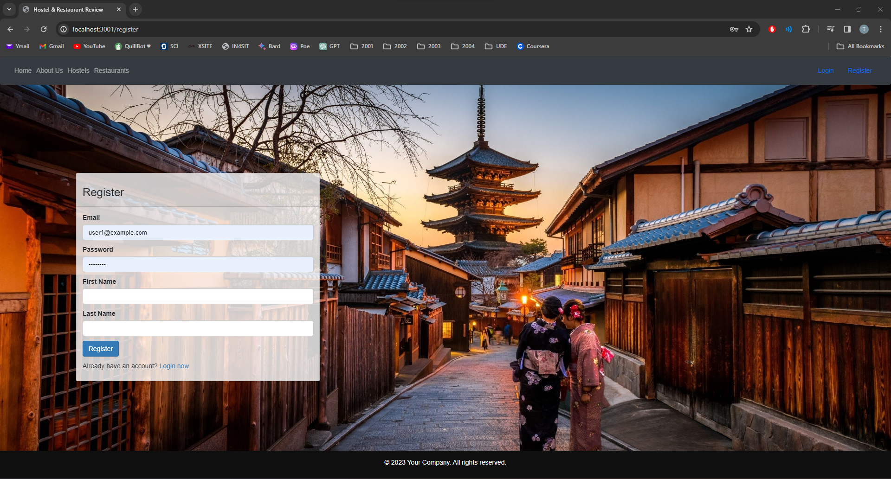
User Features
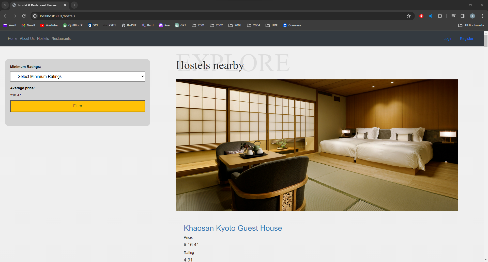
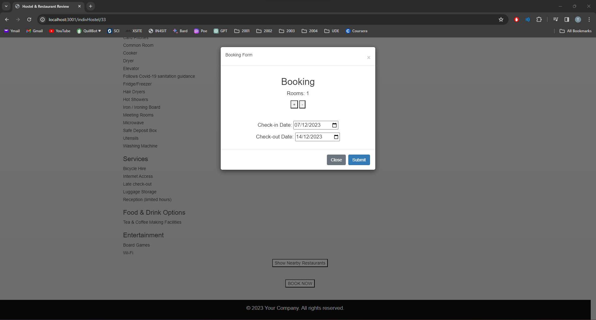
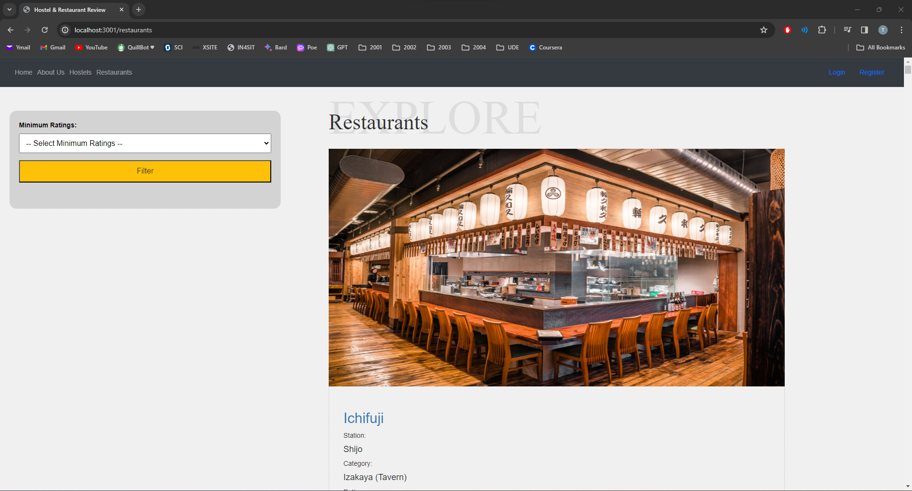
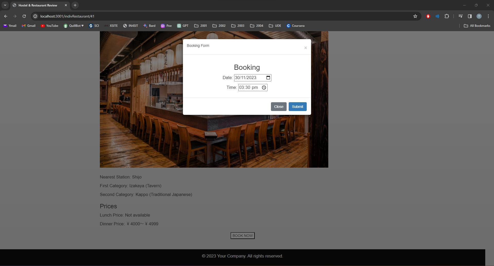
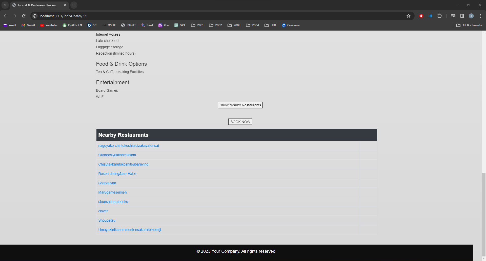
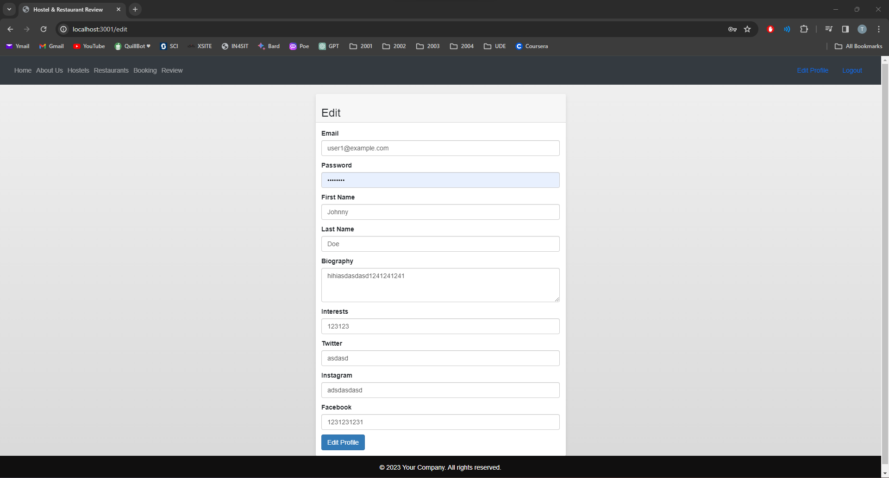
Admin Features
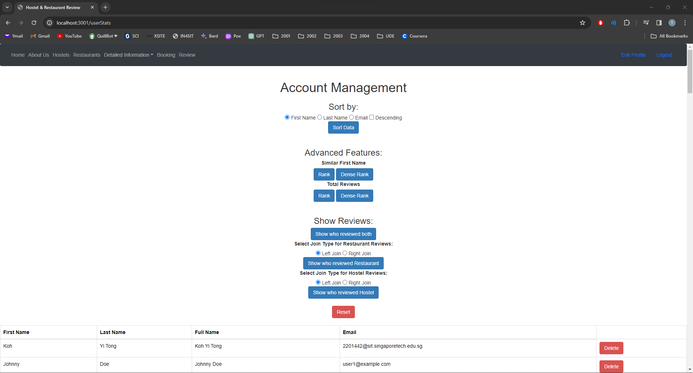
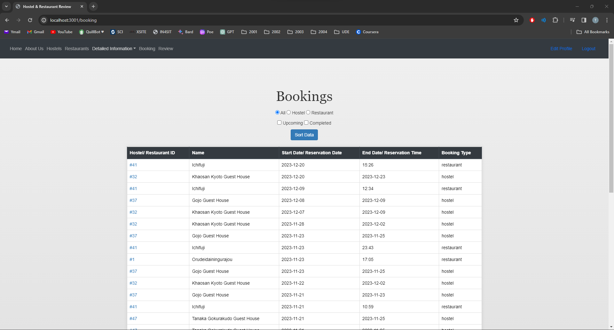